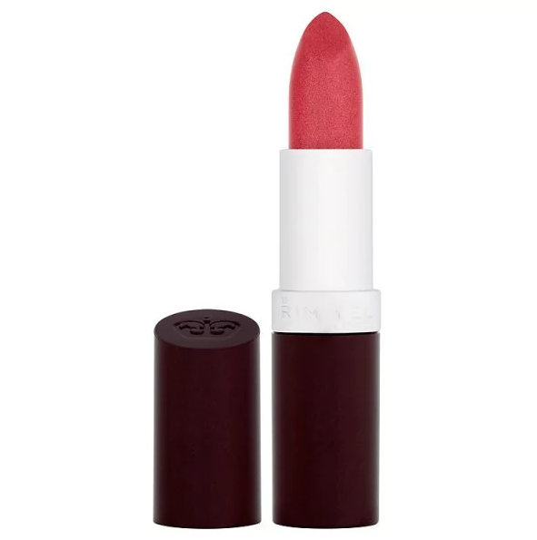

숏컷이다보니 헤어컷을 자주 해줘야 함
앞머리가 길어져서 눈근처로 내려오면 그렇게 귀찮을 수가 없다 -_-
자주 자르다보니 헤어컷을 해도 나밖에 모른다;;
한번은 넌 머리가 아예 자라지 않는거 아냐? 란 소릴 들었다 ㅋㅋㅋㅋㅋㅋㅋㅋ

어제에 이어서 립스틱 잡담
사진은 Rimmel Lasting Finish Lipstick
Drop of Sherry 58
색은 정말 내 취향이지만 케이스가 너무 거지같아서 버려버렸다;;
디올 립스틱 하나도 바닥에 떨궈서 케이스 금가서 버려버림;;
내가 이렇게 물건을 험하게 썼나;;;
두번째로 구입한 샤넬 스틸로 히스토리는 다 썼다
동일 라인에서 립스틱 두개를 끝까지 다 쓰다니 매우 놀라움 ^^
역시 파우치에 넣고 다녀야;;;;
최근 가장 많이 사용하는것은 역시 맥의 임패션드랑
립스틱퀸의 stoked
확실히 난 겨울에만 화장품 구매욕이 활활 타오르는거 같다;;;
요즘엔 신상을 봐도 그닥 사고싶단 생각이 안들고 있음 ^^;;
날이 덥네여;;;
가만히 있어도 누가 내 에너지를 쪽쪽 빼가는 느낌입니다 -_-;;;